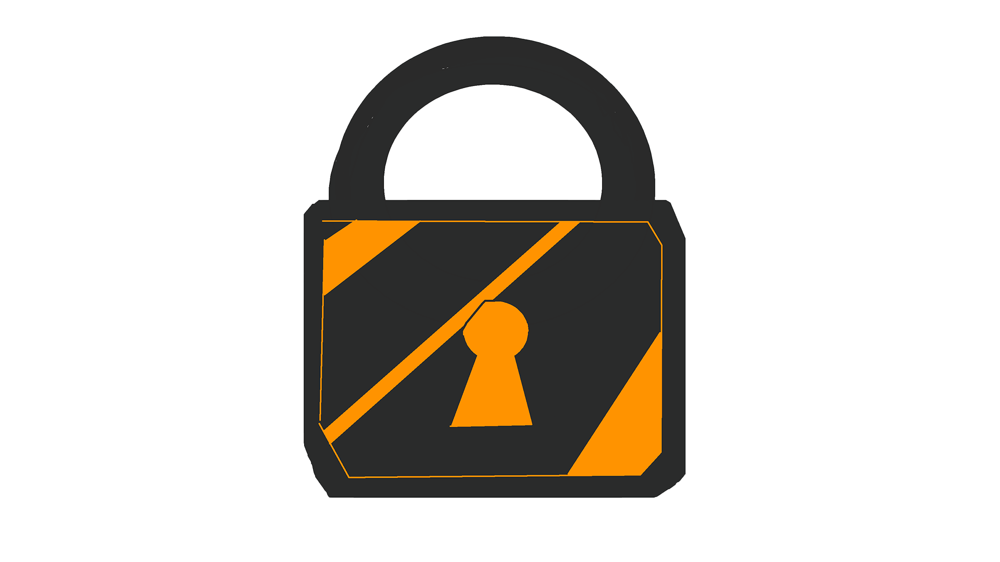

Level 4
Sådan holder du dine Bitcoins sikre
Okay, du er hooked på Bitcoin - men hvordan passer du på det? Bitcoin opbevares i noget, der hedder en "wallet" (eller tegnebog på dansk). Det er ikke en fysisk ting, men en slags digital nøgle, der giver dig adgang til dine bitcoins på blockchainen. Der findes to hovedtyper: "hot wallets" og "cold wallets".
En "hot wallet" er online, f.eks. en app på din telefon eller computer. Den er nem at bruge til daglige køb, men mindre sikker, hvis nogen hacker dig. En "cold wallet" er offline, som en USB-nøgle eller et stykke papir med dine koder. Den er super sikker, men mindre praktisk til hurtige handler.
Sikkerhed er altafgørende: Del aldrig din private nøgle (en slags adgangskode) med nogen, og brug stærke passwords. Hvis du mister din nøgle, er dine bitcoins væk for evigt – ingen bank kan hjælpe dig. Men gør det rigtigt, og dine penge er sikrere end i en bankboks. Start småt, lær systemet, og snart er du en Bitcoin-pro!
⬅ Tilbage Tillykke! Du har gennemført alle levels!🎉